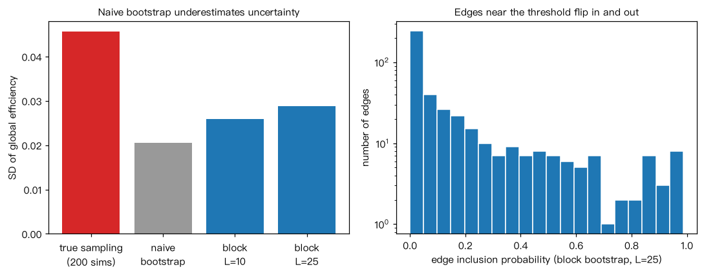

Example09 / 11
边权不确定性向网络指标的传播——块 bootstrap、边入选概率与“指标的均值 ≠ 均值网络的指标”
模拟单名被试 30 个脑区、T=300 个时间点的自相关时间序列（AR(1)，系数 0.7），按 3 个系统共享信号。 流程：相关矩阵 → 比例阈值（保留最强 15% 的边）→ 全局效率、传递性、度最高的 5 个“枢纽”。 (1) “真值”参照：从同一生成模型独立重复模拟 200 次，得到指标的真实抽样标准差； (2) 朴素 bootstrap：逐时间点有放回重抽样（破坏自相关）；(3) 循环块 bootstrap：按长度 L 的连续块重抽样。 解读：朴素 bootstrap 低估不确定性；块 bootstrap 更接近真实抽样变异。阈值附近的边入选概率接近 0.5， 是指标不稳定的主要来源；把整个流程（含阈值化）放进重抽样循环，才能把边权误差传播到网络指标上。
Output输出图

Output文字输出
观测：全局效率=0.442 传递性=0.475 真实抽样标准差（200 次独立重复）：效率 0.0457 传递性 0.0812 朴素 bootstrap（逐点） 标准差：效率 0.0206 传递性 0.0531 入选概率在 0.2–0.8 之间的边占比=0.15 前 5 枢纽平均重合=0.42 循环块 bootstrap L=10 标准差：效率 0.0259 传递性 0.0581 入选概率在 0.2–0.8 之间的边占比=0.19 前 5 枢纽平均重合=0.35 循环块 bootstrap L=25 标准差：效率 0.0288 传递性 0.0565 入选概率在 0.2–0.8 之间的边占比=0.19 前 5 枢纽平均重合=0.37 bootstrap 指标均值：效率=0.437 传递性=0.390；共识网络的指标：效率=0.435 传递性=0.484
Code代码
# 模拟单名被试 30 个脑区、T=300 个时间点的自相关时间序列（AR(1)，系数 0.7），按 3 个系统共享信号。
# 流程：相关矩阵 → 比例阈值（保留最强 15% 的边）→ 全局效率、传递性、度最高的 5 个“枢纽”。
# (1) “真值”参照：从同一生成模型独立重复模拟 200 次，得到指标的真实抽样标准差；
# (2) 朴素 bootstrap：逐时间点有放回重抽样（破坏自相关）；(3) 循环块 bootstrap：按长度 L 的连续块重抽样。
# 解读：朴素 bootstrap 低估不确定性；块 bootstrap 更接近真实抽样变异。阈值附近的边入选概率接近 0.5，
# 是指标不稳定的主要来源；把整个流程（含阈值化）放进重抽样循环，才能把边权误差传播到网络指标上。
import numpy as np
import networkx as nx
rng = np.random.default_rng(31)
N, T, phi, n_sys = 30, 300, 0.7, 3
labels = np.repeat(np.arange(n_sys), N // n_sys)
load = rng.uniform(0.2, 0.7, size=N)
def ar1(shape, rng):
e = rng.standard_normal(shape)
x = np.zeros(shape)
for t in range(1, shape[-1]):
x[..., t] = phi * x[..., t - 1] + e[..., t]
return x
def simulate(rng):
sys_sig = ar1((n_sys, T), rng)
return load[:, None] * sys_sig[labels] + ar1((N, T), rng)
iu = np.triu_indices(N, 1)
n_keep = int(round(0.15 * len(iu[0])))
def pipeline(X):
R = np.corrcoef(X)[iu]
keep = np.argsort(-R)[:n_keep]
A = np.zeros((N, N), bool)
A[iu[0][keep], iu[1][keep]] = True
A |= A.T
G = nx.from_numpy_array(A.astype(int))
deg = A.sum(axis=1)
return nx.global_efficiency(G), nx.transitivity(G), A[iu], set(np.argsort(-deg)[:5])
# (1) 真实抽样变异（实际研究中拿不到，这里用来检验 bootstrap）
truth = np.array([pipeline(simulate(rng))[:2] for _ in range(200)])
X = simulate(rng)
E0, C0, edges0, hubs0 = pipeline(X)
def boot(X, B, L, rng):
out, inc, hub_overlap = [], np.zeros(len(iu[0])), []
for _ in range(B):
if L == 1:
idx = rng.integers(T, size=T)
else: # 循环块 bootstrap
starts = rng.integers(T, size=int(np.ceil(T / L)))
idx = (starts[:, None] + np.arange(L)).ravel()[:T] % T
e, c, a, h = pipeline(X[:, idx])
out.append((e, c)); inc += a; hub_overlap.append(len(h & hubs0) / 5)
return np.array(out), inc / B, np.mean(hub_overlap)
print(f"观测：全局效率={E0:.3f} 传递性={C0:.3f}")
print(f"真实抽样标准差（200 次独立重复）：效率 {truth[:, 0].std():.4f} 传递性 {truth[:, 1].std():.4f}")
sd_boot = [] # 保存各方法的标准差用于作图
for L in (1, 10, 25):
res, inc, hov = boot(X, 300, L, rng)
sd_boot.append(res[:, 0].std())
unstable = np.mean((inc > 0.2) & (inc < 0.8))
name = "朴素 bootstrap（逐点）" if L == 1 else f"循环块 bootstrap L={L}"
print(f"{name:<22} 标准差：效率 {res[:, 0].std():.4f} 传递性 {res[:, 1].std():.4f} "
f"入选概率在 0.2–0.8 之间的边占比={unstable:.2f} 前 5 枢纽平均重合={hov:.2f}")
if L == 25:
inc25 = inc
# 指标的均值 vs 均值网络（按入选概率取前 15% 的“共识网络”）的指标
cons = np.zeros((N, N), int)
top = np.argsort(-inc25)[:n_keep]
cons[iu[0][top], iu[1][top]] = 1
Gc = nx.from_numpy_array(cons + cons.T)
print(f"bootstrap 指标均值：效率={res[:, 0].mean():.3f} 传递性={res[:, 1].mean():.3f}；"
f"共识网络的指标：效率={nx.global_efficiency(Gc):.3f} 传递性={nx.transitivity(Gc):.3f}")
# 作图：全局效率的标准差（真值 vs 三种 bootstrap）；块 bootstrap（L=25）下的边入选概率分布
import matplotlib.pyplot as plt
fig, ax = plt.subplots(1, 2, figsize=(10, 4))
ax[0].bar(["true sampling\n(200 sims)", "naive\nbootstrap", "block\nL=10", "block\nL=25"],
[truth[:, 0].std()] + sd_boot, color=["C3", "0.6", "C0", "C0"])
ax[0].set_ylabel("SD of global efficiency")
ax[0].set_title("Naive bootstrap underestimates uncertainty", fontsize=10)
ax[1].hist(inc25, bins=20, color="C0", edgecolor="white")
ax[1].set_xlabel("edge inclusion probability (block bootstrap, L=25)"); ax[1].set_ylabel("number of edges")
ax[1].set_yscale("log")
ax[1].set_title("Edges near the threshold flip in and out", fontsize=10)
plt.tight_layout(); plt.show()Run在浏览器中运行
首次加载 Python 环境约需 20–40 秒；可以修改参数后重新运行。